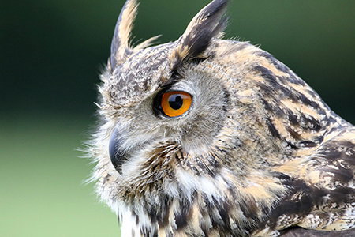
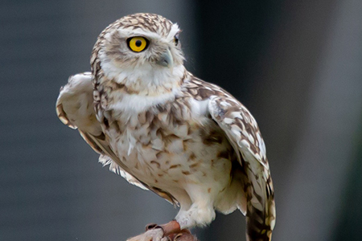

Europäischer Uhu (Bubo bubo)

Der Uhu ist eine majestätische Eule und eine der größten Eulenarten weltweit. Er ist vor allem in Europa und Teilen Asiens verbreitet. Mit einer Flügelspannweite von bis zu 1,80 Metern ist er ein wahrer Gigant der Lüfte. Sein Federkleid variiert in verschiedenen Brauntönen und ist mit auffälligen weißen Flecken versehen, die ihm eine camouflageartige Tarnung in seiner natürlichen Umgebung ermöglichen.
Was den Uhu jedoch wirklich einzigartig macht, ist seine außergewöhnliche Jagdfähigkeit. Er ist ein ausgesprochener Nachtjäger, der sich in der Dunkelheit auf die Suche nach Beute begibt. Sein Gesicht ist von einem auffälligen Federkranz umgeben, der als Gesichtsschleier bekannt ist. Dieser Schleier ermöglicht es ihm, Schallwellen zu erfassen und auch die kleinste Bewegung in der Dunkelheit wahrzunehmen.
Der Uhu ernährt sich hauptsächlich von Nagetieren wie Mäusen und Ratten, aber auch von Vögeln und anderen Kleintieren. Mit seinen scharfen Krallen und seinem kräftigen Schnabel ist er in der Lage, seine Beute effizient zu fangen und zu töten. Das markante „Uhu-Uhu“ ist ein bekannter Ruf, den viele mit der mystischen Stimmung der nächtlichen Wälder in Verbindung bringen.
Der Uhu ist ein Einzelgänger und bewohnt verschiedene Lebensräume, von Felsklippen bis hin zu dichten Wäldern. Er ist ein standorttreues Tier und verteidigt sein Revier gegen andere Eulen und Eindringlinge. Lebensraumverlust und Umweltverschmutzung sind Gründe dafür, dass der Uhu in manchen Regionen gefährdet ist. Um den Uhu zu schützen, sind verschiedene Naturschutzmaßnahmen erforderlich – dazu gehören die Erhaltung und Wiederherstellung von geeigneten Lebensräumen sowie die Sensibilisierung der Menschen für den Schutz dieser beeindruckenden Eulenart.
Schleiereule (Tyto alba)

Die Schleiereule (Tyto alba) ist eine faszinierende Eulenart, die aufgrund ihres charakteristischen Gesichtsschleiers und ihrer leisen Flugfähigkeit bekannt ist. Mit ihrem anmutigen Erscheinungsbild und ihrer einzigartigen Jagdstrategie hat die Schleiereule die Aufmerksamkeit von Naturbegeisterten auf der ganzen Welt auf sich gezogen.
Die Schleiereule ist in Europa, Asien, Afrika und Teilen Amerikas verbreitet. Ihr Federkleid ist überwiegend weiß mit einigen braunen Flecken und Streifen. Ihr markantes Merkmal ist jedoch der herzförmige Gesichtsschleier, der ihr den Namen „Schleiereule“ verliehen hat. Dieser Gesichtsschleier dient dazu, Schallwellen zu erfassen und ermöglicht es der Eule, selbst die leisesten Geräusche in der Dunkelheit wahrzunehmen.
Als nachtaktiver Jäger ist die Schleiereule auf eine präzise Jagdstrategie angewiesen. Sie verlässt sich hauptsächlich auf ihr ausgezeichnetes Gehör, um ihre Beute zu orten. Ihre Flügel sind mit speziellen Federn ausgestattet, die eine lautlose Fortbewegung in der Luft ermöglichen. Dadurch kann sie sich unbemerkt an ihre Opfer heranschleichen und plötzlich zuschlagen. Ihre Beute besteht hauptsächlich aus Mäusen, Ratten und anderen Kleinsäugern.
Aufgrund des Verlusts von Lebensräumen und des Einsatzes von Pestiziden ist die Schleiereule jedoch in einigen Regionen gefährdet. Der Schutz und die Erhaltung ihrer Lebensräume sind daher von entscheidender Bedeutung, um das langfristige Überleben dieser faszinierenden Eulenart zu gewährleisten.
Steinkauz (Athene noctua)

Der Steinkauz (Athene noctua) ist ein faszinierender Eulenvogel, der in Europa, Asien und Nordafrika beheimatet ist. Obwohl er zu den kleinsten Eulenarten gehört, ist der Steinkauz für seine einzigartigen Merkmale und Verhaltensweisen bekannt. Der Steinkauz ist etwa so groß wie eine Amsel und hat ein auffälliges Aussehen. Sein Gefieder ist grau-braun mit weißen Flecken und Strichen, was ihm eine gute Tarnung in seinem Lebensraum bietet. Eine seiner bemerkenswertesten Eigenschaften ist sein lebhafter gelblicher Augenaufschlag, der ihm einen neugierigen Ausdruck verleiht.
Im Gegensatz zu vielen anderen Eulenarten ist der Steinkauz sowohl tag- als auch nachtaktiv. Er ist besonders aktiv während der Dämmerung und der Morgendämmerung, wenn er seine Jagd auf kleine Säugetiere wie Mäuse, Ratten und Insekten beginnt. Er lauert geduldig auf einer erhöhten Position und stürzt sich dann mit großer Präzision auf seine Beute. Seine scharfen Krallen und sein kräftiger Schnabel helfen ihm, seine Nahrung erfolgreich zu ergreifen.
Die Erhaltung des Steinkauzes ist von großer Bedeutung, da sein Bestand in einigen Gebieten rückläufig ist. Habitatverlust, intensive Landwirtschaftspraktiken und der Einsatz von Pestiziden sind einige der Hauptbedrohungen für diese faszinierende Eulenart. Zahlreiche Naturschutzmaßnahmen, wie die Schaffung geeigneter Lebensräume und der Schutz von Brutplätzen, sind entscheidend, um den Steinkauz zu erhalten.